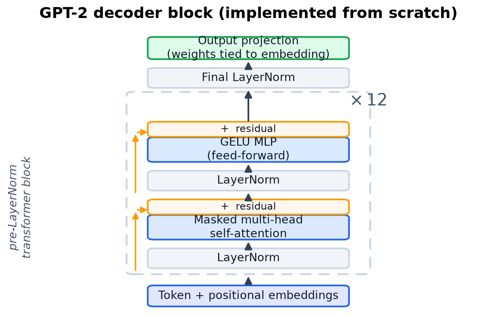
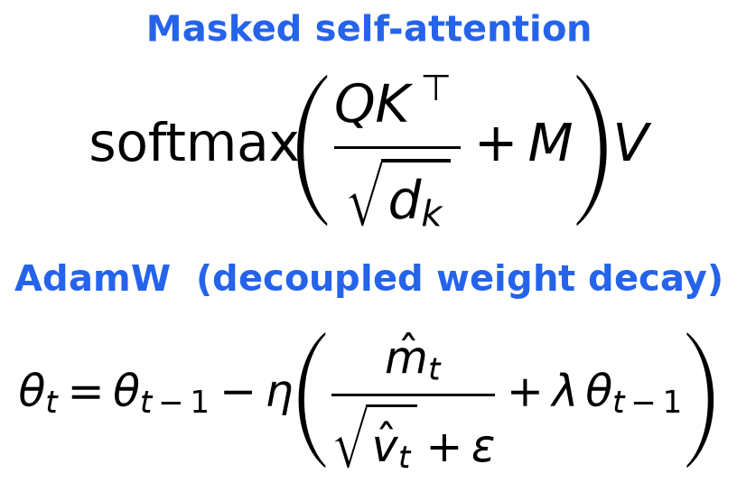
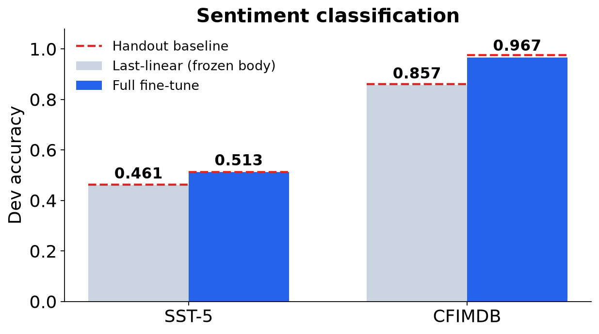
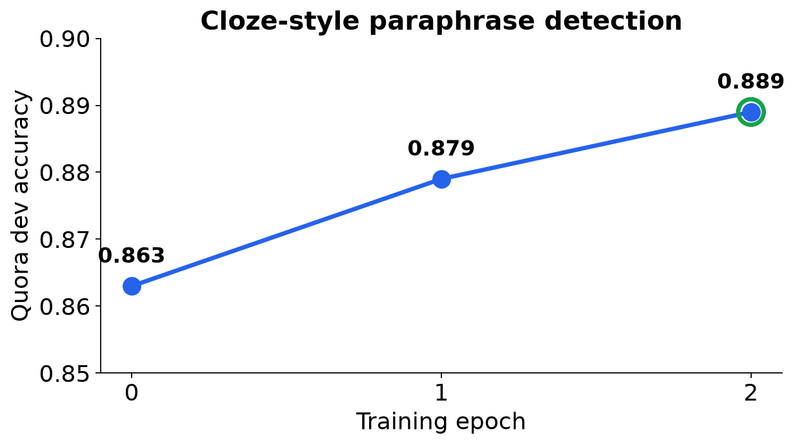
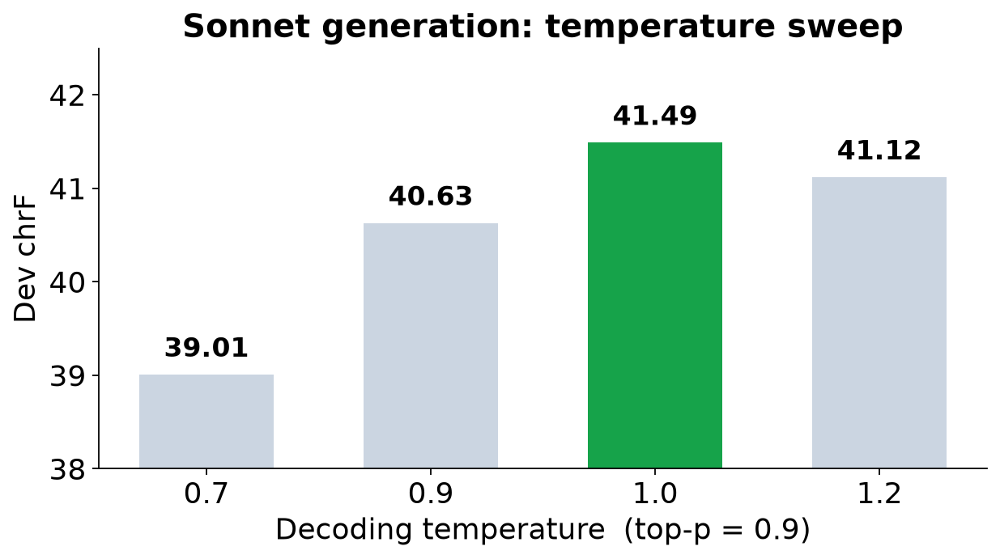
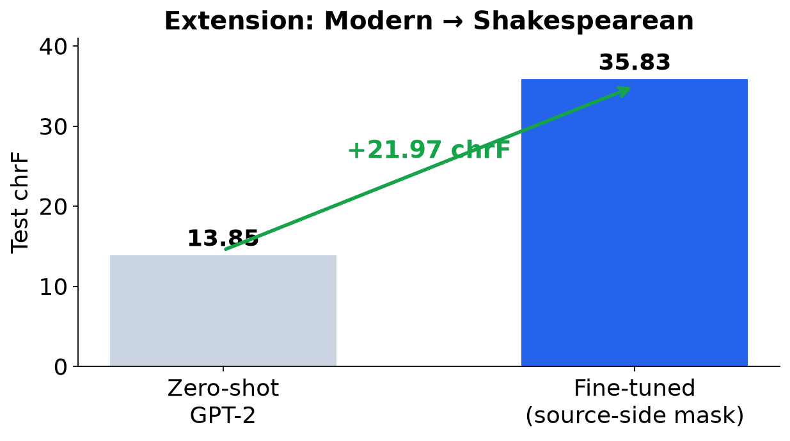
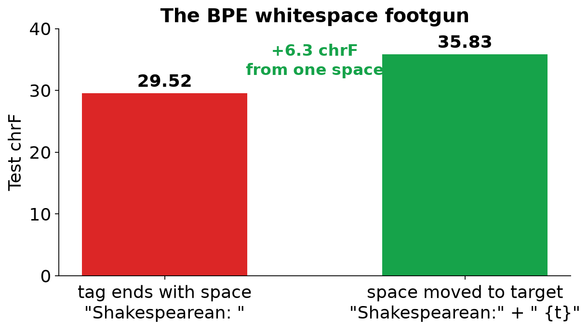

CS224N Default Final Project · CENG-534, İzmir Institute of
Technology
No CUDA GPU — trained entirely on Apple Silicon (MPS)
One backbone, four tasks
GPT-2 from scratch
→
Sentiment
Paraphrase
Sonnet
Extension ★
We built the primitives ourselves (attention, transformer block,
AdamW), then loaded pretrained weights and adapted them. The tasks
climb a ladder of generative difficulty: classify →
cloze-classify → generate →
style-transfer.
0.967CFIMDB dev acc
0.889Quora dev acc
41.49Sonnet dev chrF
+21.97Extension chrF gain
GPT-2, built from its primitives


$ python optimizer_test.py
Optimizer test passed!
$ python sanity_check.py
Your GPT2 implementation
is correct!
Task 1 — Sentiment classification

Predict the label from the last-token hidden state.
Full fine-tune > frozen body on both
datasets — biggest jump on binary CFIMDB (+0.11).
We match the handout baselines (red dashes). The only real gap
is CFIMDB full (0.967 vs 0.976) — a gap we examine, and explain
what does not cause it, on slide 10.
Task 2 — Paraphrase as a cloze question
Reduce binary classification to next-token prediction:
Is "…invest in share market?" a
paraphrase of
"…invest in share market in india?"?
→ yes = 8505 /
no = 3919

Two design choices that mattered:
① Identical cloze template at train & test — a
mismatch silently inflated dev but tanked the held-out test
score.
② Left truncation (max_len 128) keeps the end of the
prompt — where the answer is produced — and bounds MPS memory.
Task 3 — Sonnet generation

Those lips that Love's own hand did make
Breathed forth the sound that said "I hate"
To me that languished for her sake; …
Condition on 3 lines, generate the rest with
top-p sampling. Sweep temperature: low → repetition,
high → drift. τ = 1.0 is the sweet spot.
★ Extension — Modern → Shakespearean
From detecting a paraphrase to producing one in a
target style. Same SonnetGPT machinery —
no new model class. Data: Jhamtani "No Fear
Shakespeare", 18.4k parallel pairs.
Source-side loss masking — train only on the target tokens:
Modern:Ilove…Shakespearean:Myheart'slove…<eos>
▦ masked (ignore_index = −100)
·
■ loss computed here
★ Extension — it works

Modern
Our model
Holy Saint Francis, this is a drastic change!
Saint Francis, this is a sudden change!
Have you given up so quickly on Rosaline…?
Have you no more of Rosalind, whom thou loved so
much?
Fine-tuning more than doubles chrF (13.85 →
35.83). The model adopts archaic forms —
thou, doth, hath — while keeping the meaning.
Analysis — a one-space, +6.3 chrF bug

GPT-2's BPE binds a leading space to the next token:
" Shakespearean" ≠
"Shakespearean".
A prompt ending in a space ("Shakespearean: ")
forces the first step out-of-distribution → it emits junk
(~~~~, ----).
Fix: move the space onto the target. One
character → +6.3 chrF.
Analysis — training without a GPU
Variable-length batches fragment the Apple
MPS allocator; the cached pool grows until it OOMs
(>25 GiB on CFIMDB, a mid-epoch crash on Quora).
①bound sequence length + small batch
②periodic empty_cache()
③eval under no_grad()
With this recipe, full fine-tuning ran stably end-to-end on
a 24 GB MacBook — and it motivates parameter-efficient methods
(LoRA) as future work.
What didn’t work — and a hypothesis we tested
Tested & honest
Hypothesis tested, not confirmed: CFIMDB gap
(0.967 vs 0.976) not closed by batch size —
eff. batch 4→32 gave 0.959 (no gain; not converged, so
not “worse” either). Cause unexplained,
single-seed.
All numbers single-run — small gaps
(sonnet 1.0 vs 1.2) within noise.
Sonnet corpus tiny (143) → overfits past ~2 epochs.
chrF is n-gram (Holtzman caveat) → added held-out
perplexity 99→59 + corpus distinct-n.
Still open / future
Multi-seed runs + report mean±std.
A cloze-vs-linear-head ablation to prove the design
choice.
MAUVE as a third generation metric alongside chrF.
LoRA for stable multi-epoch training on a larger backbone.
Takeaways
1 backbone4 tasks, GPT-2 from scratch
+21.97style-transfer extension (chrF)
+6.3BPE whitespace footgun (chrF)
single-runCFIMDB gap not isolated
① Built GPT-2 from scratch and adapted it across four tasks.
② An original style-transfer extension with source-side masking
(+21.97 chrF). ③ The BPE whitespace footgun (+6.3
chrF) — understanding the tokenizer mattered as much as the
model. ④ Honest limitation: single-run results and
one open CFIMDB gap.
Future work: LoRA for a larger backbone (GPT-2
medium), DPO for sonnet quality, wider decoding search.
Thank you
Questions?
Every number reproduces in seconds from committed artifacts:
conda activate cs224n_dfp
python reproduce_metrics.py # Tables 3–6, no retraining